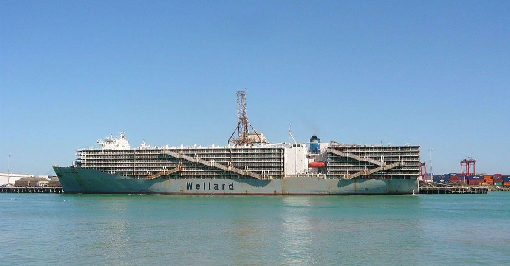
Exportación de bovinos, ovinos y caprinos vivos desde Brasil, Uruguay, Argentina, Chile, Australia y Rumania. Coordinación logística desde Miami como hub. Cortes premium de carne bovina y ovina. Certificación MAPA, ICA, OIE. Halal disponible.Export of live cattle, sheep and goats from Brazil, Uruguay, Argentina, Chile, Australia and Romania. Logistics coordination from Miami as hub. Premium beef and lamb cuts. MAPA, ICA, OIE certification. Halal available.Exportação de bovinos, ovinos e caprinos vivos do Brasil, Uruguai, Argentina, Chile, Austrália e Romênia. Coordenação logística a partir de Miami como hub. Cortes premium de carne bovina e ovina. Certificação MAPA, ICA e OIE. Halal disponível.تصدير الأبقار والأغنام والماعز الأحياء من البرازيل وأوروغواي والأرجنتين وتشيلي وأستراليا ورومانيا. قطع لحوم بقري وضأن ممتازة. شهادة MAPA وICA وOIE. Halal متاح.从巴西、乌拉圭、阿根廷、智利、澳大利亚和罗马尼亚出口活牛、羊和山羊。迈阿密作为物流枢纽进行协调。优质牛肉和羊肉切割。MAPA、ICA、OIE认证。清真认证可选。
Animales Vivos · Exportación CertificadaLive Animals · Certified ExportAnimais Vivos · Exportação Certificadaالحيوانات الحية · تصدير معتمد活体动物 · 认证出口
Bovinos vivos de razas Nelore, Angus Cruzado y Brahman desde Brasil y Colombia. Peso promedio 350–500 kg. Certificación sanitaria MAPA e ICA con historial completo de vacunación y origen. Aptos para engorde, reproducción y faena con Halal.Live cattle of Nelore, Angus Cross and Brahman breeds from Brazil and Colombia. Average weight 350–500 kg. MAPA and ICA sanitary certification with full vaccination history and origin. Suitable for fattening, breeding and Halal slaughter.Bovinos vivos das raças Nelore, Angus cruzado e Brahman, do Brasil e da Colômbia. Peso médio de 350–500 kg. Certificação sanitária MAPA e ICA com histórico completo de vacinação e origem. Aptos para engorda, reprodução e abate Halal.أبقار حية من سلالات نيلور وأنجوس وبراهمان من البرازيل وكولومبيا. وزن متوسط 350-500 كجم. شهادة صحية MAPA وICA. مناسبة للتسمين والتربية والذبح الحلال.来自巴西和哥伦比亚的尼罗尔、安格斯杂交和婆罗门品种活牛。平均重量350-500公斤。MAPA和ICA卫生认证。适合育肥、繁育和清真屠宰。
Ovinos vivos de razas Dorper, Ile de France y Santa Inês desde Brasil. Alta demanda en Medio Oriente y Caribe. Peso 35–65 kg. Vacunación completa MAPA. Certificados OIE. Operaciones directas GLV en fincas ganaderas del sur de Brasil.Live sheep of Dorper, Ile de France and Santa Inês breeds from Brazil. High demand in Middle East and Caribbean. Weight 35–65 kg. Full MAPA vaccination. OIE certificates. Direct GLV operations on livestock farms in southern Brazil.Ovinos vivos das raças Dorper, Ile de France e Santa Inês, do Brasil. Alta demanda no Oriente Médio e no Caribe. Peso de 35–65 kg. Vacinação completa MAPA. Certificados OIE. Operações diretas da GLV em fazendas no sul do Brasil.أغنام حية من سلالات دوربر وإيل دو فرانس وسانتا إينيس من البرازيل. طلب مرتفع في الشرق الأوسط. وزن 35-65 كجم. شهادات OIE.来自巴西的多尔珀、法国岛和圣伊内斯品种活羊。中东和加勒比需求旺盛。重量35-65公斤。OIE证书。
Caprinos vivos de razas Anglo Nubiana y Boer desde Colombia y Brasil. Ideal para mercado étnico USA, Caribe, Medio Oriente y África. Peso 25–50 kg. Certificación ICA Colombia y MAPA Brasil. Halal certificado disponible.Live goats of Anglo Nubian and Boer breeds from Colombia and Brazil. Ideal for ethnic market USA, Caribbean, Middle East and Africa. Weight 25–50 kg. ICA Colombia and MAPA Brazil certification. Halal certified available.Caprinos vivos das raças Anglo-Nubiana e Boer, da Colômbia e do Brasil. Ideais para o mercado étnico dos EUA, Caribe, Oriente Médio e África. Peso de 25–50 kg. Certificação ICA Colômbia e MAPA Brasil. Certificação Halal disponível.ماعز حية من سلالات أنجلو نوبيان وبوير من كولومبيا والبرازيل. مثالية للسوق الإثنية والشرق الأوسط. وزن 25-50 كجم. شهادة ICA وMAPA.来自哥伦比亚和巴西的盎格鲁努比亚和波尔品种活山羊。适合族裔市场、美国、加勒比、中东和非洲。重量25-50公斤。
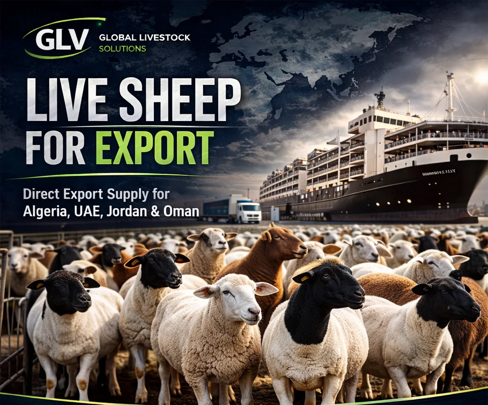
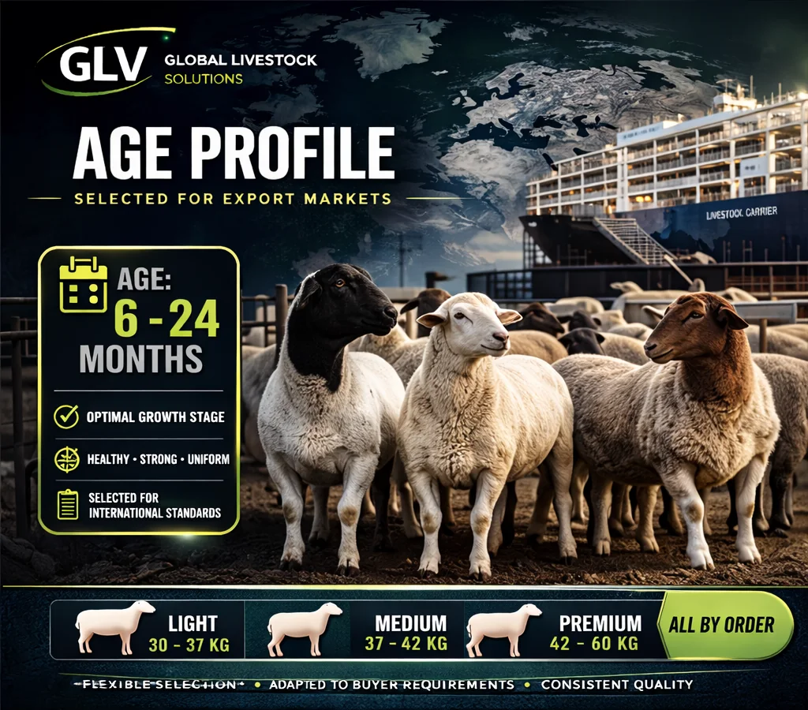
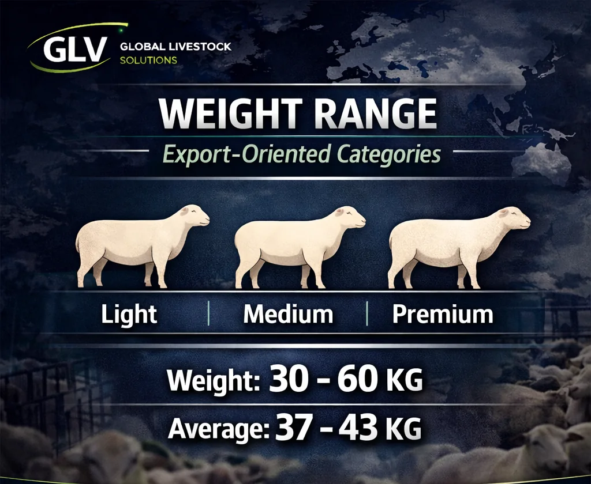
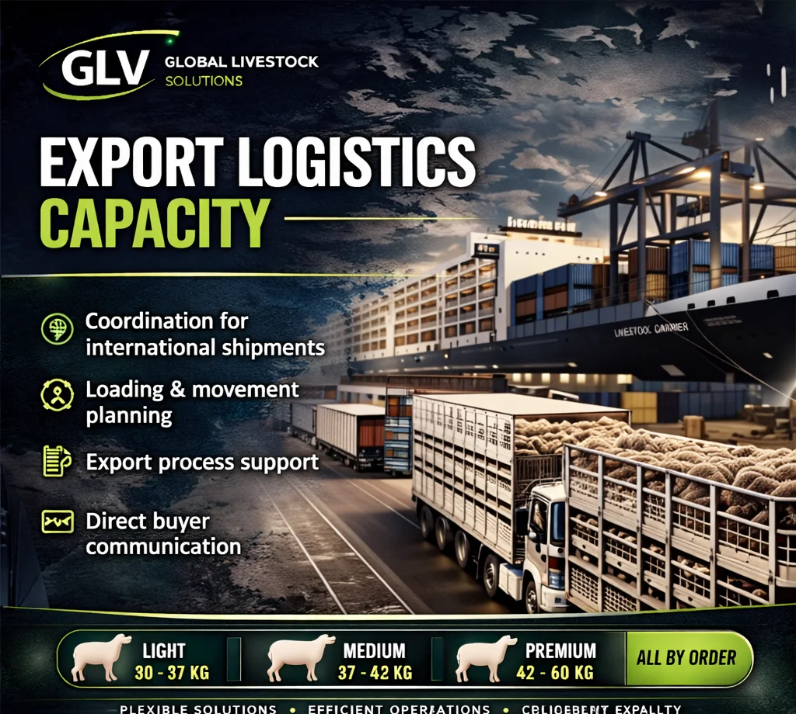
Razas CertificadasCertified BreedsRaças certificadasالسلالات المعتمدة认证品种
Raza Zebu de alta rusticidad y adaptabilidad tropical. Carne magra, alta tolerancia al calor. 80% del rebaño ganadero brasileño.Zebu breed of high rusticity and tropical adaptability. Lean meat, high heat tolerance. 80% of Brazil's livestock herd.Raça zebuína de alta rusticidade e adaptação tropical. Carne magra e alta tolerância ao calor. Representa 80% do rebanho bovino brasileiro.سلالة زيبو عالية التحمل والتكيف مع المناخ الاستوائي. لحوم قليلة الدهن وقدرة عالية على تحمل الحرارة. تمثل 80% من قطيع الأبقار في Brasil.适应性强、适合热带环境的瘤牛品种。肉质精瘦，耐热性高，占Brasil牛群的80%。
Cruce Angus × Nelore. Carne con mayor marmoleado. Ideal para mercados premium y cortes especiales de exportación.Angus × Nelore cross. Higher marbled meat. Ideal for premium markets and special export cuts.Cruzamento Angus × Nelore. Carne com maior marmoreio. Ideal para mercados premium e cortes especiais de exportação.هجين Angus × Nelore. لحوم ذات تداخل دهني أعلى. مناسب للأسواق الممتازة وقطع التصدير الخاصة.Angus × Nelore杂交品种，大理石纹更丰富，适合高端市场和特色出口分割肉。
Raza ovino de doble propósito, carne y piel. Alta prolificidad. Preferida en Medio Oriente por su sabor intenso y conformación corporal.Dual-purpose sheep breed, meat and skin. High prolificacy. Preferred in the Middle East for its intense flavor and body conformation.Raça ovina de dupla finalidade: carne e pele. Alta prolificidade. Preferida no Oriente Médio pelo sabor intenso e pela conformação corporal.سلالة أغنام ثنائية الغرض للحوم والجلود. عالية الخصوبة ومفضلة في الشرق الأوسط لنكهتها وتكوينها الجسدي.肉皮兼用绵羊品种，繁殖力高。因风味浓郁和体型特点受到中东市场青睐。
Ovino carnicero de origen francés. Musculatura superior, poca grasa. Muy apreciado en mercados gourmet y restauración de alta gama.French-origin meat sheep. Superior musculature, little fat. Highly appreciated in gourmet markets and high-end restaurants.Ovino de corte de origem francesa. Musculatura desenvolvida e pouca gordura. Muito valorizado em mercados gourmet e restaurantes de alto padrão.أغنام لحم من أصل فرنسي، ذات عضلات متطورة ودهون قليلة. تحظى بتقدير في الأسواق والمطاعم الراقية.源自法国的肉用绵羊，肌肉发达、脂肪较少，深受精品市场和高端餐饮业重视。
Cortes Premium · ExportaciónPremium Cuts · ExportCortes premium · Exportaçãoقطع ممتازة · تصدير优质切割 · 出口
Lomo ancho con hueso. Alta marmorización. Ref. IMPS 112A. Congelado o fresco.Bone-in ribeye. High marbling. Ref. IMPS 112A. Frozen or fresh.Contrafilé com osso. Alto marmoreio. Ref. IMPS 112A. Congelado ou resfriado.ريب آي بالعظم. تداخل دهني مرتفع. المرجع IMPS 112A. مجمد أو مبرد.带骨眼肉，大理石纹丰富。参考IMPS 112A。冷冻或冷藏。
USDA Ref.Lomo fino sin hueso. Corte NY Strip. Congelado IQF. Halal disponible.Boneless fine loin. NY Strip cut. IQF frozen. Halal available.Contrafilé sem osso. Corte NY Strip. Congelamento IQF. Halal disponível.لحم خاصرة دون عظم، قطع NY Strip، مجمد بتقنية IQF. خيار الحلال متاح.去骨外脊，NY Strip切块，IQF单体速冻，可提供清真选项。
NY StripSolomillo. El corte más tierno. Empaque individual. MOQ 500 kg.Tenderloin. The most tender cut. Individual packaging. MOQ 500 kg.Filé-mignon. O corte mais macio. Embalagem individual. Pedido mínimo de 500 kg.فيليه، أطرى القطع. تعبئة فردية. الحد الأدنى للطلب 500 كجم.里脊，最嫩的部位。独立包装。最低订购量500公斤。
PremiumPaleta bovina. Ideal para guisos, mercado masivo. Precio competitivo.Chuck roast. Ideal for stews, mass market. Competitive price.Paleta bovina. Ideal para ensopados e mercado de grande volume. Preço competitivo.كتف بقري. مناسب لليخنات والأسواق واسعة الاستهلاك. سعر تنافسي.牛肩肉，适合炖煮和大众市场，价格具有竞争力。
Mass MarketCostillar de cordero Halal. 8 costillas. Premium gastronómico.Halal lamb rack. 8 ribs. Gastronomic premium.Carré de cordeiro Halal. 8 costelas. Produto gastronômico premium.ريش ضأن حلال، 8 أضلاع. منتج فاخر للمطاعم.清真羊排，8根肋骨，适合高端餐饮。
HalalPierna entera o deshuesada. Congelado. MOQ 1 MT. Medio Oriente.Whole or boneless leg. Frozen. MOQ 1 MT. Middle East.Pernil inteiro ou desossado. Congelado. Pedido mínimo de 1 tonelada. Oriente Médio.فخذ كامل أو منزوع العظم. مجمد. الحد الأدنى للطلب طن متري واحد. الشرق الأوسط.整只或去骨羊腿，冷冻。最低订购量1公吨。面向中东市场。
HalalPaleta de cordero entera. Cocción lenta. Mercado árabe y mediterráneo.Whole lamb shoulder. Slow cooking. Arab and Mediterranean market.Paleta inteira de cordeiro. Cocção lenta. Mercado árabe e mediterrâneo.كتف ضأن كامل. للطهي البطيء. السوق العربية والمتوسطية.整块羊肩，适合慢炖，面向阿拉伯和地中海市场。
Arab MarketFlank, skirt, brisket, short rib. Por pedido. MOQ flexible.Flank, skirt, brisket, short rib. By order. Flexible MOQ.Fraldinha, diafragma, peito e costela curta. Sob encomenda. Pedido mínimo flexível.قطع الخاصرة والحجاب الحاجز والصدر والأضلاع القصيرة. حسب الطلب. حد أدنى مرن.腹肉、横膈膜肉、胸肉和牛小排。按单供应，最低订购量灵活。
Custom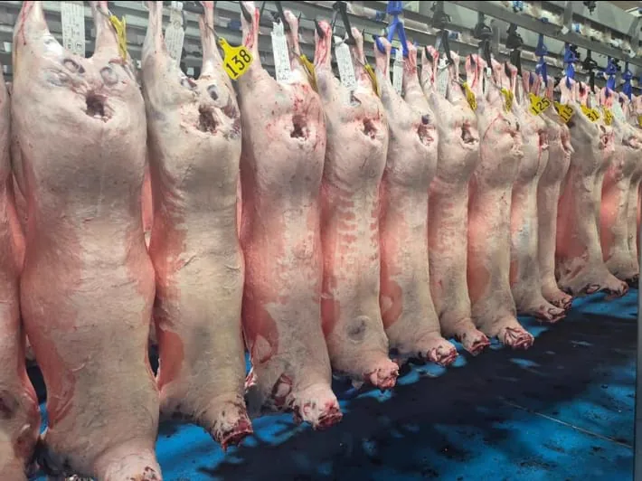
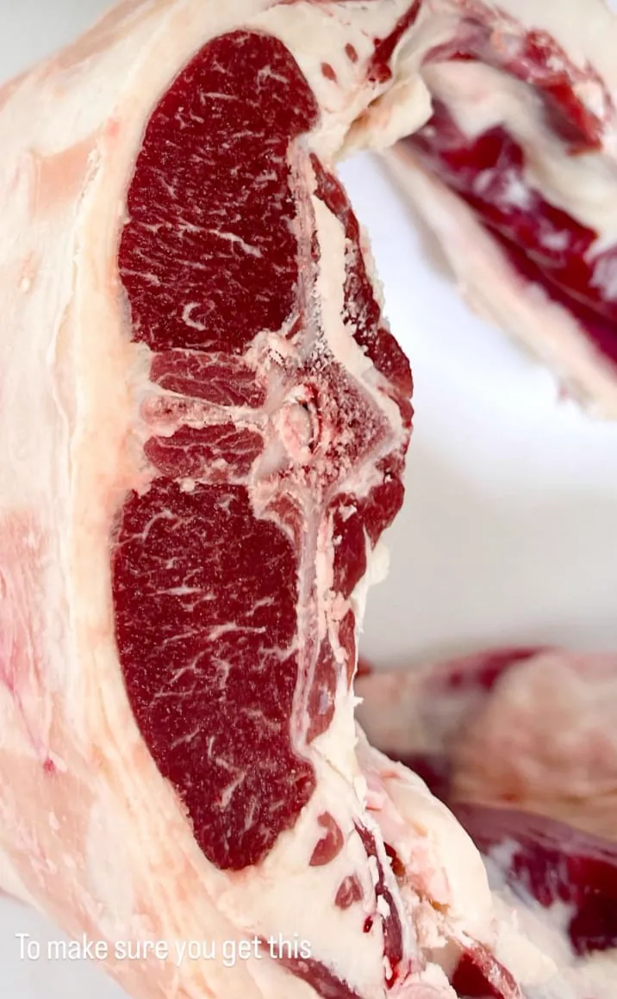
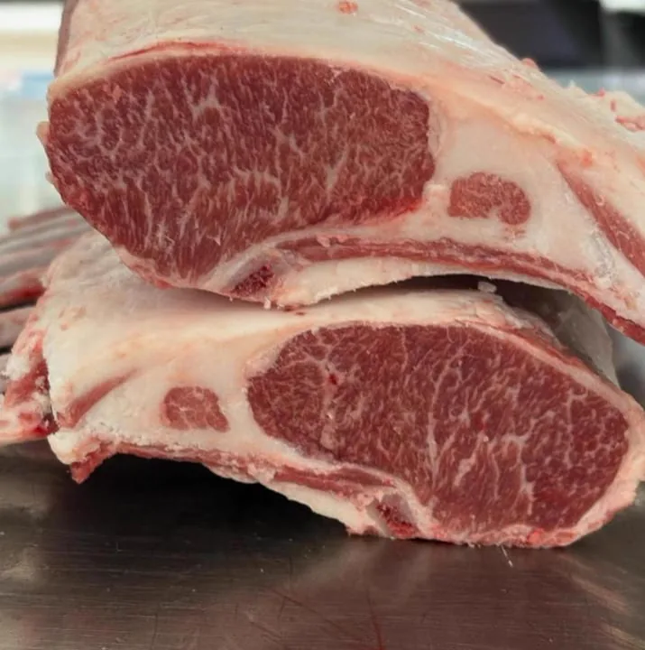
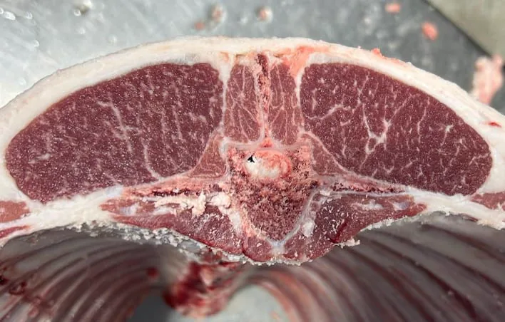
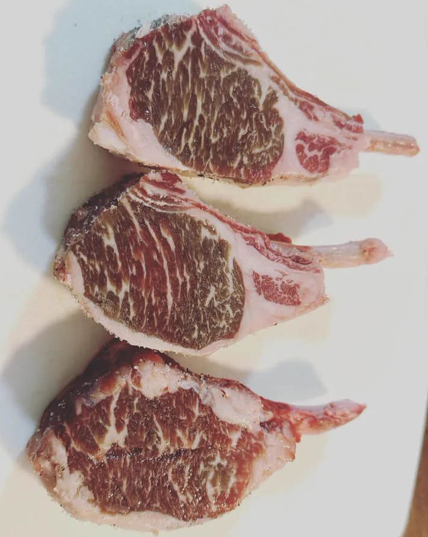
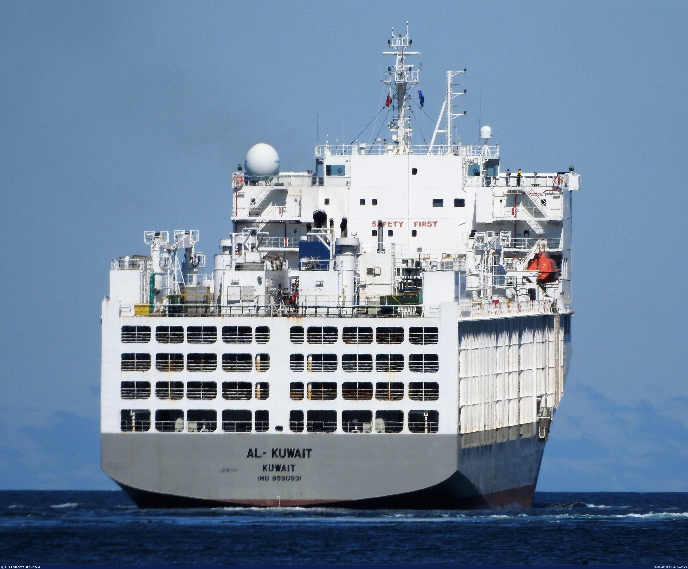
Logística Viva · Buques GanaderosLive Logistics · Livestock VesselsLogística de animais vivos · Navios de transporteاللوجستيات الحية · سفن الماشية活体物流 · 牲畜运输船
El transporte de animales vivos exige logística de precisión. GLV Global Food Services coordina el embarque en buques ganaderos certificados con sistemas de ventilación, alimentación automatizada y veterinarios a bordo. Orígenes: Brasil, Uruguay, Argentina, Chile, Australia y Rumania. Destinos: UAE, Kuwait, Jordania, Caribe y África.Transporting live animals requires precision logistics. GLV Global Food Services coordinates shipment on certified livestock vessels with ventilation systems, automated feeding and onboard veterinarians. Origins: Brazil, Uruguay, Argentina, Chile, Australia and Romania. Destinations: UAE, Kuwait, Jordan, Caribbean and Africa.O transporte de animais vivos exige logística de precisão. A GLV Global Food Services coordena o embarque em navios certificados, com sistemas de ventilação, alimentação automatizada e veterinários a bordo. Origens: Brasil, Uruguai, Argentina, Chile, Austrália e Romênia. Destinos: EAU, Kuwait, Jordânia, Caribe e África.نقل الحيوانات الحية يتطلب لوجستيات دقيقة. تنسق GLV الشحن على سفن ماشية معتمدة. المسارات الرئيسية: ميامي → الإمارات، الكويت، الأردن، الكاريبي.活体动物运输需要精准物流。GLV协调在认证牲畜船上装运，配备通风系统、自动喂料和船上兽医。主要航线：迈阿密→阿联酋、科威特、约旦、加勒比。
Buques Ganaderos ReferenciaReference Livestock VesselsNavios de transporte de animais de referênciaسفن الماشية المرجعية参考牲畜运输船
Mercados DestinoDestination MarketsMercados de destinoالأسواق المستهدفة目标市场
Proceso OperativoOperational ProcessProcesso operacionalالعملية التشغيلية运营流程
Selección en fincas Colombia y Brasil. Visita personal GLV. Registro sanitario individual.Selection on farms Colombia and Brazil. GLV personal visit. Individual health registry.Seleção em fazendas na Colômbia e no Brasil. Visita presencial da GLV. Registro sanitário individual.اختيار الحيوانات في مزارع كولومبيا وBrasil. زيارة ميدانية من GLV. سجل صحي فردي.在哥伦比亚和Brasil牧场进行筛选。GLV人员实地考察。建立个体卫生档案。
Exámenes veterinarios completos. Certificados MAPA / ICA. Cuarentena pre-embarque.Complete veterinary exams. MAPA / ICA certificates. Pre-shipment quarantine.Exames veterinários completos. Certificados MAPA / ICA. Quarentena pré-embarque.فحوص بيطرية كاملة. شهادات MAPA / ICA. حجر صحي قبل الشحن.完整兽医检查。MAPA / ICA证书。装运前检疫。
Carga en buque ganadero certificado. Supervisión veterinaria. Capacidad según especie.Loading on certified livestock vessel. Veterinary supervision. Capacity according to species.Carregamento em navio certificado para transporte de animais. Supervisão veterinária. Capacidade conforme a espécie.تحميل على سفينة معتمدة لنقل المواشي. إشراف بيطري. السعة حسب النوع.装载至经认证的牲畜运输船。兽医监督。运载能力依据物种确定。
Tránsito PortMIA si aplica. Inspección USDA/FDA. Documentación completa.PortMIA transit if applicable. USDA/FDA inspection. Complete documentation.Trânsito pelo PortMIA, quando aplicável. Inspeção USDA/FDA. Documentação completa.العبور عبر PortMIA عند الاقتضاء. فحص USDA/FDA. وثائق كاملة.适用时经PortMIA中转。USDA/FDA检查。文件齐全。
Desembarque supervisado. Certificados Halal si aplica. Soporte post-entrega.Supervised disembarkation. Halal certificates if applicable. Post-delivery support.Desembarque supervisionado. Certificados Halal, quando aplicável. Suporte pós-entrega.إنزال تحت الإشراف. شهادات حلال عند الاقتضاء. دعم ما بعد التسليم.监督卸载。适用时提供清真证书。提供交付后支持。
Operaciones Reales · Nuestro ProcesoReal Operations · Our ProcessOperações reais · Nosso processoعمليات حقيقية · عمليتنا实际运营 · 我们的流程
Supervisión Halal desde la granja de origen hasta el punto de destino. Certificados emitidos por autoridades reconocidas. Cadena de custodia documentada para Medio Oriente, Asia y mercados musulmanes de USA.Halal supervision from the source farm to the point of destination. Certificates issued by recognized authorities. Documented chain of custody for the Middle East, Asia and US Muslim markets.Supervisão Halal desde a fazenda de origem até o destino. Certificados emitidos por autoridades reconhecidas. Cadeia de custódia documentada para o Oriente Médio, Ásia e mercados muçulmanos dos EUA.إشراف حلال من مزرعة المنشأ حتى الوجهة. شهادات صادرة عن سلطات معترف بها. سلسلة حفظ موثقة للشرق الأوسط وآسيا والأسواق الإسلامية في الولايات المتحدة.从原产牧场到目的地实施清真监督。证书由认可机构签发。面向中东、亚洲和美国穆斯林市场的监管链记录完整。
Contenido sensible. Las imágenes y el video documentan un proceso industrial halal realizado bajo controles operativos y sanitarios.Sensitive content. The images and video document an industrial Halal process carried out under operational and sanitary controls.Conteúdo sensível. As imagens e o vídeo documentam um processo industrial Halal realizado sob controles operacionais e sanitários.محتوى حساس. توثق الصور والفيديو عملية صناعية حلال تتم تحت ضوابط تشغيلية وصحية.敏感内容。这些图片和视频记录了在操作和卫生控制下进行的清真工业流程。
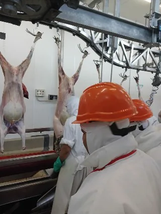
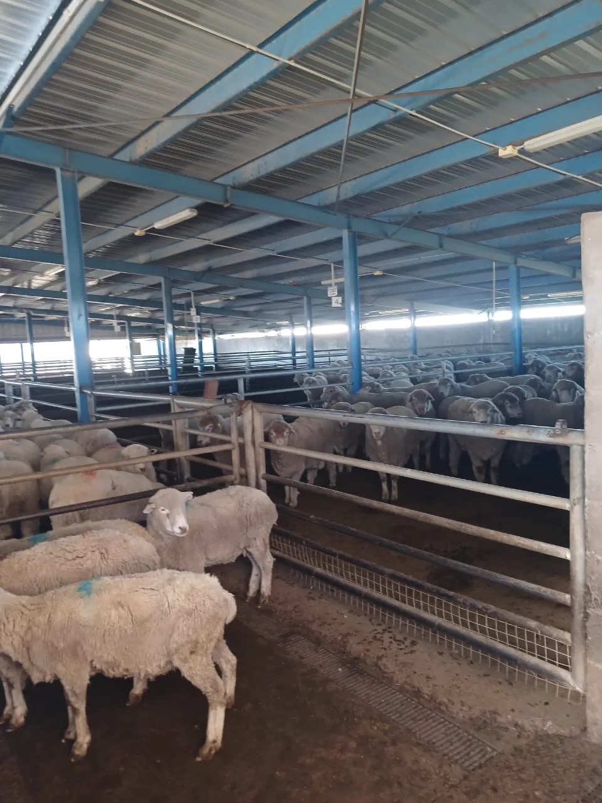
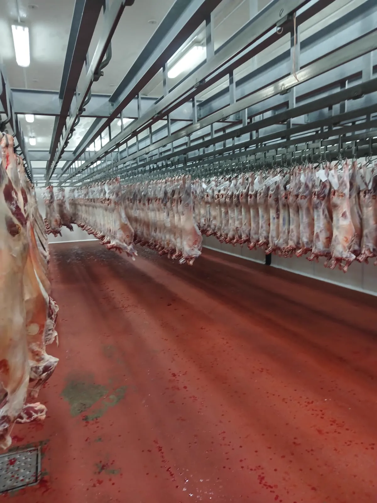
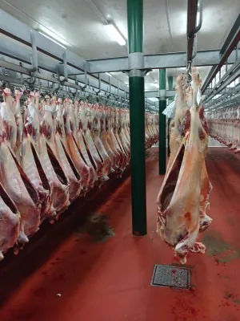
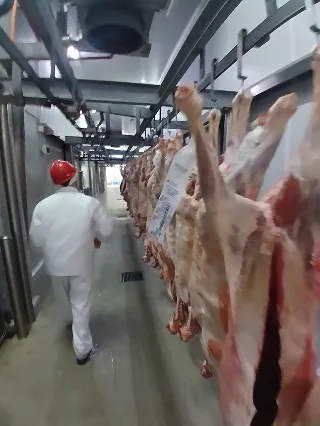
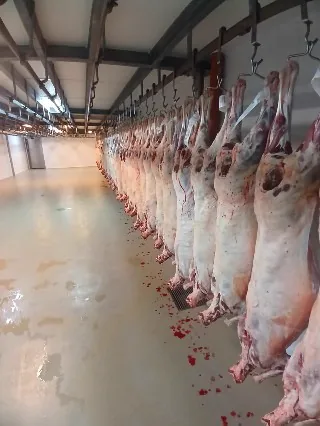
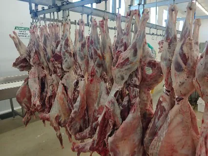
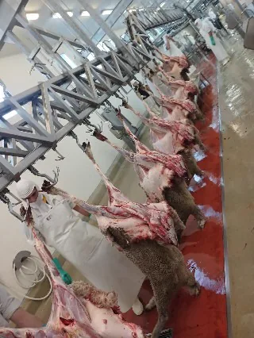
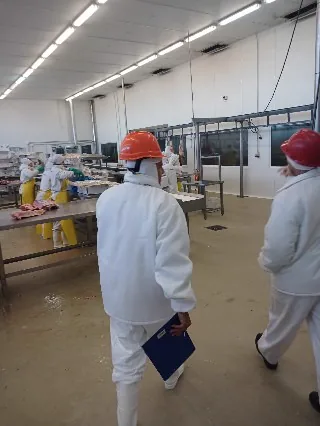
GLV Global Food Services LLC — Miami, Florida
Animales vivos, cortes o proteínas. Nuestro equipo en Miami responde en menos de 24 horas hábiles. FOB · CIF · DDP · Halal.Live animals, cuts or proteins. Our Miami team responds in under 24 business hours. FOB · CIF · DDP · Halal.Animais vivos, cortes ou proteínas. Nossa equipe em Miami responde em menos de 24 horas úteis. FOB · CIF · DDP · Halal.حيوانات حية وقطع لحوم. يستجيب فريقنا في أقل من 24 ساعة عمل. FOB · CIF · DDP · Halal.活体动物、肉类切割或蛋白质。我们的迈阿密团队在24个工作小时内响应。